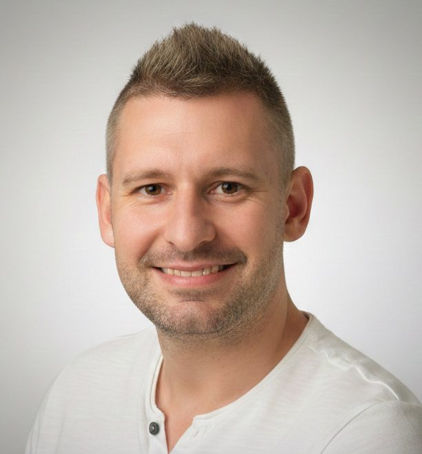
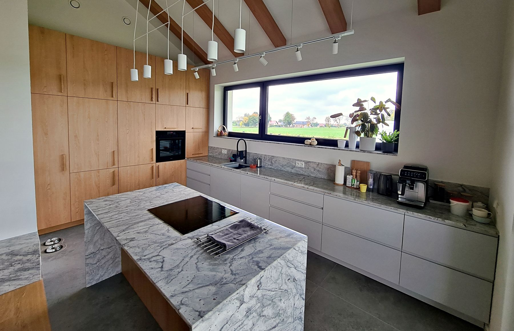
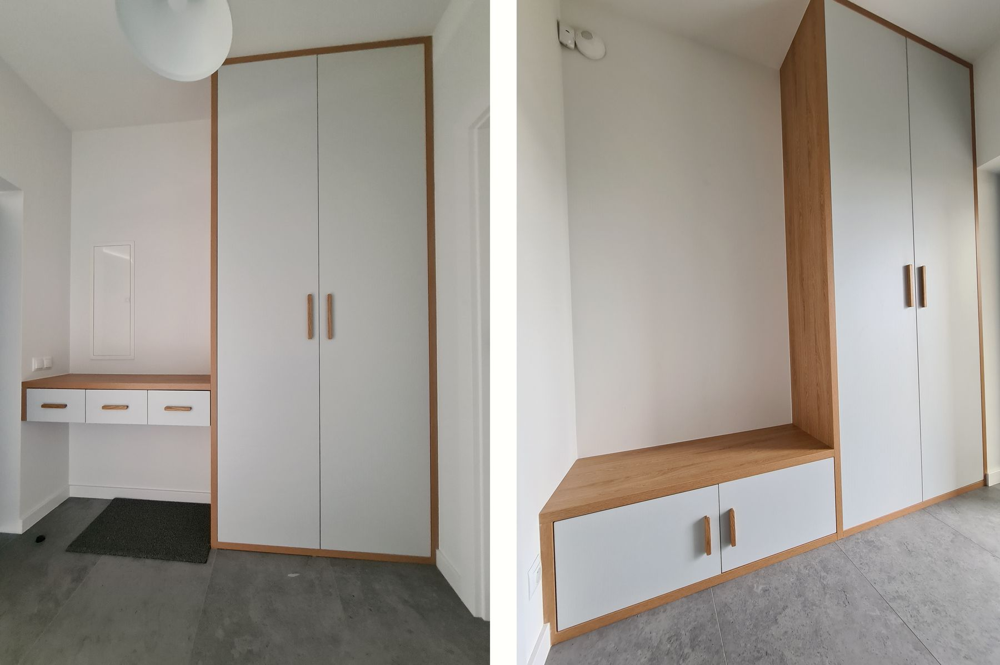
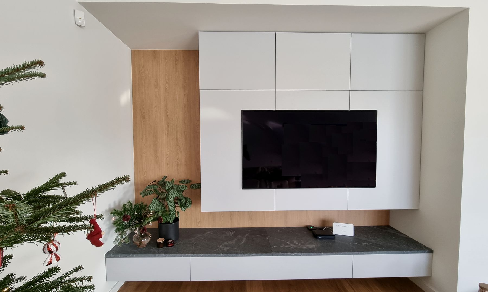

Meble na wymiar robimy od 1980 roku.
Rodzinna pracownia z Gliwic-Łabęd. Szafy, garderoby i kuchnie, które mierzymy, budujemy i montujemy sami. Pod każdym meblem podpisujemy się nazwiskiem.


Nazwisko na froncie firmy i pod każdym meblem
Umiejętności stolarskie przekazujemy w rodzinie z pokolenia na pokolenie. Dziś pracownię prowadzi Piotr Świerkosz, a meble mierzą, budują i montują Piotr, Paweł i Józef: ci sami ludzie od pierwszej wizyty do ostatniej śruby.
Każdy mebel jest dla nas nowym projektem. Najlepiej widać to w szczegółach: równej szczelinie między frontami, szufladzie z cichym domykiem, szafie dopasowanej do krzywej ściany.
Wyróżnienia Orły Meblarstwa (2020–2026) i Złota Firma (2022–2026). Meble robiliśmy także dla: Politechnika Śląska, KOMAG, PRUiM Gliwice, NOVAR, ZKS, Klub Malucha Kropka.





Tysiące mebli od 1980 roku. Kilka ostatnich:
Kuchnia pod sam sufit
Dębowa zabudowa na całą ścianę, wyspa z blatem w kamieniu i lampy nad nią. Słupki z piekarnikiem schowane w linii frontów.
Szafa pod skosem na poddaszu
Skos to nie problem, tylko wymiar więcej. Drzwi przesuwne z lustrem biegną do samej linii dachu, na końcu otwarty regał.
Przedpokój z siedziskiem
Białe fronty, dębowe wstawki, siedzisko z szufladami na buty. Zabudowa od podłogi do sufitu, bez szpar do kurzu.
Kuchnia otwarta na salon
Wyspa z półkami od strony salonu, zabudowa w dębie i bieli, okap w linii szafek.
Ściana RTV
Wysokie szafy w bieli z dębowym pasem i wisząca szafka z kamiennym blatem.
Więcej realizacji na Facebooku.
Co dla Ciebie zrobimy
Pomiar i projekt są bezpłatne, w cenie mebli. Na wszystko dajemy 36 miesięcy gwarancji.
Szafy z drzwiami przesuwnymi
Od wnęki w przedpokoju po całą ścianę pod skosem. Drzwi z lustrem, lakobelem albo płytą, także łączone pasami.
Systemy Laguna, Bimak, Indeco, Bonari
Szafy z drzwiami otwieranymi
Tradycyjne otwieranie z nowoczesnym frontem: frezowany uchwyt, lakier, dąb. Dobrze znoszą skosy i nietypowe wnęki.
Zawiasy i prowadnice Blum, GTV
Garderoby
Wnętrze rozplanowane pod to, co naprawdę w niej trzymasz: drążki, szuflady, półki na buty, miejsce na walizki.
Szuflady z cichym domykiem Blum, Häfele, Sevroll
Kuchnie na wymiar
Zabudowy pod sufit, wyspy, aneksy w kawalerce. Płyty, blaty i uchwyty dobieramy razem z Tobą.
Płyty i blaty Kronospan, okucia Blum
Inne meble na wymiar
Regały na książki, ściany RTV, szafki łazienkowe, meble do biur i instytucji.
Płyty laminowane, fronty lakierowane, szkło i lustra z folią
„Pan przyjechał na wymiary, zaraz potem podał wycenę. (…) Panowie byli terminowi co do dnia. W dniu montażu przyjechali złożyli wszystko w ok 3 godzinki (…) Panowie pozostawili po sobie porządek, wszystko zostało poodkurzane oraz poodkładane na miejsce.”
„wykorzystali całą przestrzeń szafki optymalnie jeśli chodzi o dodatkowe półki. To kawał dobrej roboty zważywszy, że ściany w łazience są bardzo krzywe.”
„Trzeba czekać na realizację, ale nie może być razem dobrze, niedrogo i szybko ;) I tak terminy nie są tak napięte jak w innych miejscach, za to, jak już przyjdą, to robią montaż szybko i dokładnie, zostawiając po sobie porządek.”
„Od pomiarów przez informacje o postępie w produkcji do samego montażu. Szybko, sprawnie, czysto i w pełni profesjonalnie. Tak to powinno wyglądać w każdej firmie.”
„Zamówiłem szafę do zabudowy wnęki przedpokoju i muszę przyznać że jakość wykonania i użytych materiałów przerosła moje oczekiwania.”
Jak pracujemy
Od telefonu do sprzątnięcia po montażu. Dwa pierwsze kroki nic nie kosztują.
Umów pomiar 796 796 770- 1
Telefon i pomiar
Umawiamy termin, przyjeżdżamy i mierzymy pomieszczenie. Pomiar jest bezpłatny i do niczego nie zobowiązuje.
- 2
Projekt i wycena
Mówisz, czego potrzebujesz. To Ty jesteś pierwszym projektantem, my podpowiadamy materiały i rozwiązania. Potem podajemy cenę i termin.
- 3
Produkcja
Meble powstają u nas, z płyt i okuć, które razem wybraliśmy. W trakcie możesz zapytać, na jakim etapie jest Twoje zamówienie.
- 4
Transport
Przywozimy meble i wnosimy je na każde piętro.
- 5
Montaż
W umówionym dniu. Szafę czy zabudowę przedpokoju zwykle składamy w kilka godzin, a po montażu sprzątamy.
- 6
Gwarancja i serwis
36 miesięcy gwarancji na wszystko. Po jej zakończeniu nadal pomagamy i serwisujemy.
Zanim zadzwonisz
Ile kosztuje pomiar i projekt?
Nic. Przyjazd, pomiar i projekt są w cenie mebli, a pomiar do niczego nie zobowiązuje. Jeśli wycena Ci nie odpowiada, nie płacisz za wizytę.
Jak długo czeka się na meble?
Termin podajemy razem z wyceną. Zależy od rodzaju mebli i liczby zamówień w danym momencie. Wolimy powiedzieć uczciwie, ile to potrwa, niż obiecać termin, którego nie dotrzymamy.
Ile trwa montaż?
Zwykle jeden dzień, a szafę czy zabudowę przedpokoju składamy w kilka godzin. Po montażu sprzątamy i odkurzamy.
Z jakich materiałów i okuć robicie meble?
Płyty i blaty Kronospan, okucia i szuflady z cichym domykiem Blum, Häfele i Sevroll, systemy drzwi przesuwnych Laguna, Bimak, Indeco i Bonari, szkło i lustra z folią zabezpieczającą.
Czy wnosicie meble na piętro?
Tak. Transport obejmuje wniesienie na każde piętro.
Jaka jest gwarancja?
36 miesięcy na wszystko, co zrobimy. Po tym czasie nadal serwisujemy i pomagamy.
Gdzie pracujecie?
Pracownia jest w Gliwicach-Łabędach. Jeździmy po Gliwicach, Zabrzu i okolicy; o dalszy dojazd zapytaj przez telefon.
Czy robicie meble dla firm i instytucji?
Tak. Robiliśmy meble m.in. dla Politechniki Śląskiej, KOMAG-u, PRUiM Gliwice, NOVAR-u, ZKS i Klubu Malucha Kropka.
Zadzwoń albo wpadnij do pracowni
ul. Staromiejska 15, 44-109 Gliwice (Łabędy)
pon.–pt. 8:00–16:00
mebleswierkosz@gmail.com